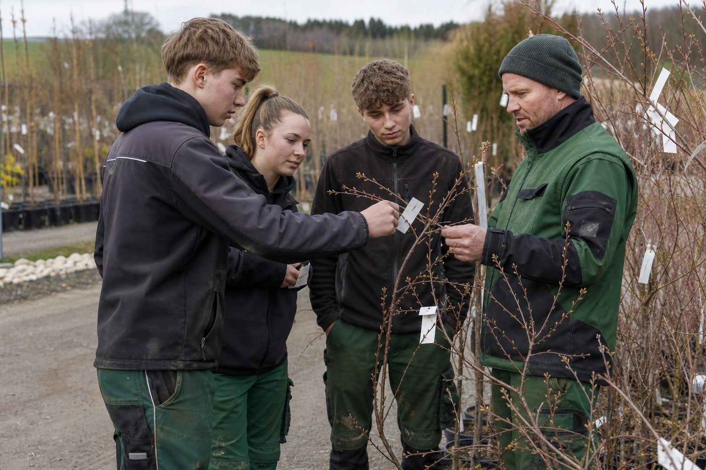

50 Pflanzen in 30 Minuten: Wie die Pflanzenkenntnis-Prüfung läuft – und wie Betriebe ihre Azubis vorbereiten
Pflanzenkenntnisse sind das Prüfungsfach, an dem Landschaftsgärtner am häufigsten scheitern. Was die Pflanzenliste verlangt, warum der botanische Name zählt und wie fünf Minuten pro Woche den Unterschied machen.

- Abschlussprüfung: 50 Pflanzen in 30 Minuten erkennen und mit Gattung, Art und deutschem Namen benennen, dazu 30 Minuten schriftlich.
- Grundlage sind die Pflanzenlisten der Länder mit mehreren hundert Arten; vorrangig markierte Pflanzen bilden den Schwerpunkt der Zwischenprüfung.
- Betriebe sind zuständig: fünf Pflanzen pro Woche, Herbarium ab dem ersten Lehrjahr, Baumschulbesuch, Pflanzplan als Übung, Simulation zwei Monate vor der Prüfung.
In der Abschlussprüfung zum Landschaftsgärtner ist Pflanzenkenntnis ein eigenes Fach – und das mit der höchsten Durchfallquote. Der Prüfling bekommt 50 Pflanzen vorgelegt, als Zweige, Töpfe, Blätter oder Früchte, und hat 30 Minuten, sie zu erkennen und mit Gattung, Art und deutschem Namen zu benennen. Danach folgen 30 Minuten schriftliche Fragen zu Verwendung, Standort, Pflege und Eigenschaften. Wer im Betrieb drei Jahre lang Pflaster verlegt hat und im dritten Lehrjahr anfängt, Pflanzen zu lernen, hat ein Problem.
Die Pflanzenliste
Grundlage ist die Pflanzenliste des jeweiligen Landes, im Garten- und Landschaftsbau mit mehreren hundert Arten: Laub- und Nadelgehölze, Stauden, Gräser, Zwiebelpflanzen, Rasengräser, Kletterpflanzen. Die Listen der Länder unterscheiden sich im Detail, ähneln sich aber im Kern. In Bayern sind die Pflanzen, die vorrangig gelernt werden sollen, markiert – sie bilden den Schwerpunkt der Zwischenprüfung. Für die Abschlussprüfung gilt die ganze Liste, und dazu kommen Wildkräuter, Gründüngungspflanzen und geschützte Arten, die nicht in der Liste stehen, aber gefragt werden können.
Botanische Namen sind Pflicht. „Buche“ reicht nicht, wenn Fagus sylvatica verlangt ist; „Hainbuche“ ist Carpinus betulus und mit der Buche nicht verwandt. Die Prüfer wissen, dass die Rechtschreibung lateinischer Namen schwerfällt – sie bewerten den Namen, nicht jeden Buchstaben.
Warum Betriebe zuständig sind
Die Berufsschule vermittelt die Systematik, den Alltag mit Pflanzen vermittelt der Betrieb – oder eben nicht. Wer seine Auszubildenden überwiegend im Wegebau einsetzt, muss die Pflanzen anders in die Ausbildung holen. Vier Methoden haben sich bewährt.
Fünf Pflanzen pro Woche. Der Ausbilder oder Vorarbeiter benennt am Montag fünf Pflanzen von der aktuellen Baustelle oder dem Hof, mit Zettel am Zweig. Am Freitag werden sie abgefragt. Über drei Jahre sind das mehr als 600 Begegnungen mit der Liste.
Das Herbarium. Die meisten Berufsschulen verlangen es ohnehin: gepresste Blätter, Zweige, Blüten, mit Fundort und Datum. Wer es im ersten Lehrjahr beginnt, hat im dritten eine eigene Pflanzenliste in der Hand.
Baumschule und Staudengärtnerei. Ein halber Tag im Frühjahr und einer im Herbst, mit einer Liste der 50 wichtigsten Gehölze und Stauden – Betriebe, die von diesen Lieferanten kaufen, bekommen den Termin meist gern.
Die Baustelle als Prüfung. Jeder Pflanzplan ist eine Übung: Der Azubi ordnet die gelieferte Ware anhand der Etiketten dem Plan zu und benennt sie, bevor gepflanzt wird. Das kostet zehn Minuten und trainiert genau das, was die Prüfung verlangt.
Die Prüfung im Betrieb üben
Zwei Monate vor der Zwischen- und vor der Abschlussprüfung lohnt eine Simulation: 50 Pflanzen aus Hof, Baustelle und Baumschule, 30 Minuten, Zettel und Stift, danach gemeinsame Korrektur. Der Azubi weiß anschließend, wo er steht; der Betrieb weiß, ob er in den letzten Wochen Zeit freischaufeln muss. Ein Prüfling, der an den Pflanzen scheitert, wiederholt die gesamte Prüfung ein halbes Jahr später – und ist in dieser Zeit kein Facharbeiter. Das ist der teuerste halbe Tag im Betrieb, den man mit fünf Pflanzen pro Woche verhindern kann.
Quellen
- Landwirtschaftskammer Nordrhein-Westfalen: Informationen zur schriftlichen Abschlussprüfung im Beruf Gärtner/Gärtnerin (Pflanzenkenntnisse: 50 Pflanzen erkennen und benennen in 30 Minuten, dazu 30 Minuten schriftlicher Teil) – www.landwirtschaftskammer.de/bildung/gaertner/pruefungen/aufgaben.htm
- Bayerisches Staatsministerium für Ernährung, Landwirtschaft, Forsten und Tourismus: Pflanzenliste Garten- und Landschaftsbau (Stand Mai 2022) – www.stmelf.bayern.de/mam/cms01/berufsbildung/dateien/pflanzenliste_gala.pdf
- Landwirtschaftskammer Niedersachsen: Gärtner/Gärtnerin – Prüfung: Beispielfragen aus allen Wissensgebieten – www.lwk-niedersachsen.de/lwk/news/31692_GaertnerGaertnerin_-_Pruefung...
Kommentare
Noch keine Kommentare. Schreiben Sie den ersten.

8.089 Auszubildende: Der GaLaBau bildet so viele Landschaftsgärtner aus wie lange nicht
3.221 junge Menschen haben 2025 eine Ausbildung zum Landschaftsgärtner begonnen, 1,5 Prozent mehr als im Vorjahr. Der Frauenanteil geht dagegen zurück. Die Zahlen des BGL – und was sie über die Betriebe sagen.

Die erste Woche: Wie neue Azubis ankommen – und was in den ersten Tagen entscheidet, ob sie bleiben
Anfang August beginnen im GaLaBau die Ausbildungsverhältnisse. Die Abbrüche fallen meist in den ersten Monaten. Was das Gesetz für Jugendliche verlangt, was der Betrieb vorbereiten sollte und warum der Pate wichtiger ist als der Ausbilder.

Azubi-Mindestvergütung 2026: 724 Euro – und warum der GaLaBau davon weit entfernt ist
Das Bundesbildungsministerium hat die Mindestausbildungsvergütung für 2026 bekannt gegeben. Für Betriebe im Tarif spielt sie keine Rolle, für nicht tarifgebundene Betriebe gilt eine andere Grenze – und die liegt deutlich höher.